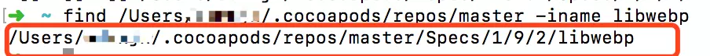
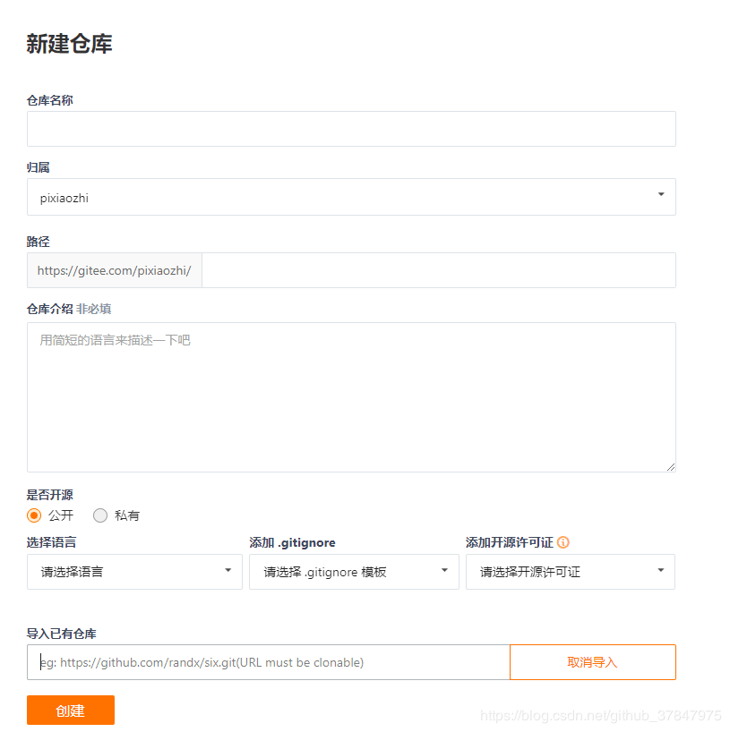

可以考虑开发一个 yarn 命令的打包压缩命令。
git使用笔记二
笔记
git reset 的 HEAD 和–hard
git reset HEAD <file>...指的是从库恢复暂存区某一个文件，如果不写<file>的话，就是把文件恢复到和最新的库一样的状态，fie 当然工作区没有变，暂存区变为原来的状态，工作区变还要git checkout --git reset --hard指的是恢复某一个库。git reset --hard HEAD^是向前回退版本，其中HEAD后面跟几个^就是往回退几个版本，如果回退 100 个版本，可以写成HEAD~100。
git tag
1 | # 在当前的最后提交的记录上打tag |
git revert
1 | # 新建一个文件并写入'abc' |
git stash
暂存当前工作，处理紧急 bug。
（1）git stash save "save message" : 执行存储时，添加备注，方便查找，只有 git stash 也要可以的，但查找时不方便识别。
（2）git stash list ：查看 stash 了哪些存储
（3）git stash show ：显示做了哪些改动，默认 show 第一个存储,如果要显示其他存贮，后面加 stash@{$num}，比如第二个 git stash show stash@{1}
（4）git stash show -p: 显示第一个存储的改动，如果想显示其他存存储，命令：git stash show stash@{$num} -p ，比如第二个：git stash show stash@{1} -p
（5）git stash apply :应用某个存储,但不会把存储从存储列表中删除，默认使用第一个存储,即 stash@{0}，如果要使用其他个，git stash apply stash@{$num} ， 比如第二个：git stash apply stash@{1}
（6）git stash pop ：命令恢复之前缓存的工作目录，将缓存堆栈中的对应 stash 删除，并将对应修改应用到当前的工作目录下,默认为第一个 stash,即 stash@{0}，如果要应用并删除其他 stash，命令：git stash pop stash@{$num} ，比如应用并删除第二个：git stash pop stash@{1}
（7）git stash drop stash@{$num} ：丢弃stash@{$num}存储，从列表中删除这个存储
（8）git stash clear：删除所有缓存的 stash
1 | # 修改1文件 |
iOS使用cocoapods 安装libwebp0.6.0遇到Error installing libwebp
原文： http://www.alpface.com/article/2018/4/15/51.html
github: https://github.com/admxjx/webP-Demo
可能会遇到 libwebp v0.6.0 超时问题:
1 | [!] Error installing libwebp |
解决方法: 尝试过翻墙，修改 host，均无效 最终，修改 pod repo 中 libwebp 的 git source 地址，再执行 pod install 解决， 但是我们需要有一个有效的 libwebp 的 git 仓库，在 github 上找到了一个https://github.com/webmproject/libwebp.git，可以看到mirrored from https://chromium.googlesource.com/webm/libwebp，而且正好有我需要的版本 0.6.0, 那么我就替换为这个。
下面是步骤
1. 查看 mac 中 cocoapods 本地库路径
执行： pod repo
找到 master 的 Path

在本地库中, 并找到对应的 libwebp 版本的文件
find [path] -iname libwebp

进入 libwebp 目录，可以看到你的仓库中有哪些对应的版本
1 | swaedeMacBook-Pro:libwebp swae$ cd /Users/swae/.cocoapods/repos/master/Specs/1/9/2/libwebp |
由于 SDWebImage 依赖的 libwebp 版本为 0.6.0，所以我们进入 0.6.0 中，并做修改
1 | swaedeMacBook-Pro:libwebp swae$ cd 0.6.0/ |
在 0.6.0 目录下的 libwebp.podspec.json 文件中修改 git source
1 | swaedeMacBook-Pro:0.6.0 swae$ sudo vim libwebp.podspec.json |
找到
1 | "source": { |
将其中的"git" 对应的 url 替换为https://github.com/webmproject/libwebp.git,并保存 最后再执行pod install, 完成
1 | swaedeMacBook-Pro:alpface swae$ pod install |
SSH 原理
什么是 SSH
SSH(Secure Shell)是为远程登录, 远程通信等设计的安全通信协议。是建立在应用层和传输层基础上的安全协议,主要用于计算机之间的加密登录。
SSH 提供身份认证,加密通信,完整性校验等功能.。(从定义和描述来看,是不是很像 HTTPS 中的 SSL 协议。)
为什么选择 SSH
互联网通信如果选择明文传输,一旦被截获,内容就暴露无遗。(设想一下: 登录过程当中,密码明文传输,一旦被截获密码,就有人可以冒充你登录。)为了保证互联网的通信安全,那必然是要加密。
加密的方式可以分为两种 : 对称加密和非对称加密 。
对称加密 : 加密和解密使用同一个密钥。 (黑客如果不知道密钥,即便获取了信息,无法解密,也就无法获取通信内容。但是这样也带来一个问题,如何保存密钥。所有的客户端都是用同一个密钥 ? 数量庞大的客户端,很难保证密钥不被窃取,一旦某个客户端密钥被窃取,黑客就能破解所有客户端信息,不安全 !
一个客户端维护一个密钥 ? 维护成本太高了 ! 试想一下, 几十、上百万的客户端,不易维护 ! 因此,延伸出非对称加密 。
非对称加密 : 加密和解密使用不同的密钥。这两个密钥分别称为 “公钥” 和 “私钥” 。其特性为公钥加密的数据,使用私钥才能解密。私钥加密的数据,使用公钥才能解密。公钥在互联网上传输,私钥服务器持有。
这样又引出来一个问题 ,公钥在互联网上传输,如何保证客户端接受的公钥是目标服务端的呢,也就是说如何保证公钥不被拦截、篡改呢 ? 举个例子: 中间人攻击,即黑客伪装成客户端接收服务器的公钥,然后伪装成服务端,将自己的公钥传递给客户端。这样服务端和客户端之间的通信都是通过中间人 , 那么数据也就泄露了 。
HTTPS 是如何防止公钥被篡改呢
HTTPS 引入了”数字证书” 。在说数字证书之前先说一下数字签名,因为这两个概念容易混淆。
数字签名的作用 : 保证信息传输的完整性、发送者的身份认证、防止交易中的抵赖发生。
数字签名 : 数字签名技术是将摘要信息用发送者的私钥加密，与原文一起传送给接收者。接收者只有用发送者的公钥才能解密被加密的摘要信息，然后用 HASH 函数对收到的原文产生一个摘要信息，与解密的摘要信息对比。如果相同，则说明收到的信息是完整的，在传输过程中没有被修改，否则说明信息被修改过，因此数字签名能够验证信息的完整性。
数字签名是个加密的过程，数字签名验证是个解密的过程。
同样有个问题，数字签名也可能被篡改,我们需要证明数字签名的合法性。因此我们引入了数字证书。
数字证书 : 数字证书不是数字身份证，而是身份认证机构盖在数字身份证上的一个章或印（或者说加在数字身份证上的一个签名）。它是由权威机构——CA 机构，又称为证书授权（Certificate Authority）中心发行的，人们可以在网上用它来识别对方的身份。
那么如何保证”数字证书”的合法性呢 ?
浏览器或移动操作系统内置了信任的根证书,只要证书为信任根颁发的或者是信任根的二级证书颁发机构颁发的。并且数字证书在有效期内(没有过期)、证书没有被吊销。那么数字证书就是合法的。
SSH
因为不像 HTTPS 协议，SSH 协议的公钥是没有证书中心（CA）公证的，也就是说，都是自己签发的。
SSH 以非对称加密实现身份验证。身份验证有多种途径，例如其中一种方法是使用自动生成的公钥-私钥对来简单地加密网络连接，随后使用密码认证进行登录；另一种方法是人工生成一对公钥和私钥，通过生成的密钥进行认证，这样就可以在不输入密码的情况下登录。任何人都可以自行生成密钥。公钥需要放在待访问的电脑之中，而对应的私钥需要由用户自行保管。认证过程基于生成出来的私钥，但整个认证过程中私钥本身不会传输到网络中。
其实 SSH 连接 Github 就是使用的第二种方式。
流程讲述下 ,无密码登录。
Client 将自己的公钥存放在 Server 上，追加在文件 authorized_keys 中。
Server 端接收到 Client 的连接请求后，会在 authorized_keys 中匹配到 Client 的公钥 pubKey，并生成随机数 R，用 Client 的公钥对该随机数进行加密得到 pubKey®，然后将加密后信息发送给 Client 。
Client 端通过私钥进行解密得到随机数 R，然后对随机数 R 和本次会话的 SessionKey 利用 MD5 生成摘要 Digest1，发送给 Server 端。
Server 端会也会对 R 和 SessionKey 利用同样摘要算法生成 Digest 2。
Server 端会最后比较 Digest1 和 Digest2 是否相同,完成认证过程。
总结
在了解 SSH 原理之前。必须对下列知识的概念有所掌握。
- 对称加密和非对称加密
- 数字签名和数字证书
- HTTPS 原理
本文为 SSH 原理的总结 ,参考了一下文章
http://www.ruanyifeng.com/blog/2011/12/ssh_remote_login.html
https://www.jianshu.com/p/33461b619d53
https://baike.baidu.com/item/%E6%95%B0%E5%AD%97%E7%AD%BE%E5%90%8D
多个远程仓库分支关联
upstream 不是针对远程仓库的，而是针对 branch 的，这一点应了那位童鞋所说的第二句话。但是 upstream 和有几个远程库没有必然联系。比如远程库 A 上有 3 个分支 branch1、branch2、branch3。远程库 B 上有 3 个分支 branchx、branchy、branchz。本地仓库有 2 个分支 local1 和 local2。那么当初始状态时，local1 和 local2 和任何一个分支都没有关联，也就是没有 upstream。当通过 git branch –set-upstream-to A/branch1 local1 命令执行后，会给 local1 和 branch1 两个分支建立关联，也就是说 local1 的 upstream 指向的是 branch1。这样的好处就是在 local1 分支上执行 git push（git pull 同理）操作时不用附加其它参数，Git 就会自动将 local1 分支上的内容 push 到 branch1 上去。同样，local2 分支也可以和远程库 A 和远程库 B 上的任何一个分支建立关联，只要给 local2 分支设置了 upstream，就可以在 local2 分支上用 git push（git pull 同理）方便地与目标分支推拉数据。
综上所述，upstream 与有几个远程库没有关系，它是分支与分支之间的流通道。
再来说说 git push -u 和 git branch –set-upstream-to 指令之间的区别。
举个例子：我要把本地分支 mybranch1 与远程仓库 origin 里的分支 mybranch1 建立关联。
（如果使用下列途径 1 的话，首先，你要切换到 mybranch1 分支上（git checkout mybranch1））
两个途径：
git push -u origin mybranch1git branch --set-upstream-to=origin/mybranch1 mybranch1
这两种方式都可以达到目的。但是 1 方法更通用，因为你的远程库有可能并没有 mybranch1 分支，这种情况下你用 2 方法就不可行，连目标分支都不存在，怎么进行关联呢？
所以可以总结一下：git push -u origin mybranch1 相当于 git push origin mybranch1 + git branch --set-upstream-to=origin/mybranch1 mybranch1
如何提升国内github的速度
两种方法
先说说修改 HOSTS 文件
步骤：
- 打开 C:\Windows\System32\drivers\etc 或者 /etc/hosts
- 找到 HOSTS 文件
- 在里面最后加上
1 | 151.101.73.194 github.global.ssl.fastly.net |
解释：前面 ip 为我们设置代理地址，后面域名是你要访问的域名，注意中间有个空格
前面这些 ip 地址是可以在 http://tool.chinaz.com/dns/ 上去查的，找一个 TTL 值比较小的。
如图：
- 保存，如果你提示没有权限修改文件的话，去属性里面修改权限，不太会修改或嫌弃修改麻烦的可以这样（复制到桌面，修改后替换原先文件）
- 刷新 DNS：打开 CMD 输入
ipconfig /flushdns；或者输入指令：sudo /etc/init.d/networking restart - 关闭浏览器再访问 github
今天我说的方法并不是这个，而是利用码云克隆 github 项目然后下载。
法二
利用码云克隆 github 项目，耗时 5 分钟
首先你要有码云账户，大多数人都有的吧（没有的话自己注册个）
步骤：
- 打开码云新建项目，选择导入已有项目
 - 在上面链接中输入我们要导的 github 项目地址，然后点击创建
- 等待码云克隆项目，大概 1-3 分钟（由你的网络和要克隆项目大小决定）
- 完成克隆
- 下载我们码云上项目（这个就是你正常下载速度了）
最后下载完成后不需要这个项目了可以在码云上去删了，我们最初只是解决下载慢和下载不下来问题而已，不要过多的创建无用项目。
这篇文章仅仅给各位一个另一种解决 github 项目下不下来的解决方法，我最后是通过法二解决了我要下载的项目。
sqlserver-mysql-oracle各自的默认端口号
sqlserver 默认端口号为：1433
URL:”jdbc:microsoft:sqlserver://localhost:1433;DatabaseName=dbname”
DRIVERNAME:”com.microsoft.jdbc.sqlserver.SQLServerDriver”;
mysql 默认端口号为：3306
URL:jdbc:mysql://localhost:3306/test? user=root&password=&useUnicode=true&characterEncoding=gbk
DRIVERNAME:”com.mysql.jdbc.Driver”;
oracle 默认端口号为：1521
URL:”jdbc:oracle:thin:@localhost:1521:orcl”;
DRIVERNAME:”oracle.jdbc.driver.OracleDriver”;
web前端--如何保证API的安全
前端一般有 App 和 web 两种,服务端后台分为无状态(分布式服务器)和有状态(单个服务器)
前端如何存储秘钥
对于 App 来说可以把秘钥存储在本地，并通过白盒加密和混淆的手段增加 App 被破解的成本
对于 Web 来说是不能存储任何秘钥的
服务端如何信任前端
对于无状态服务器可以采用 token 的方式，前端登录后服务端分配一个 token 给前端，前端每次请求 API 的时候带上这个 token，服务端验证 token 的有效性，验证通过才放行。
对于有状态的服务器可以采用 session 的方式，前端登录后服务端在 session 存储权限信息，前端在请求的时候浏览器会自动带上 session_id，服务器可以通过 session 里存储的权限信息来判断前端的合法性。
用户登录输入的账号密码如何保证安全
1、在 web 端对用户输入的密码进行 MD5，传输到服务端的密码是 MD5 的结果。
2、在 App 端可以使用本地存储的秘钥对用户输入的密码进行加密，也可以采用 MD5 的方式。
3、一定要采用 https 进行传输
4、数据库中存储不要存储明文的密码，直接存储 MD5 后的结果，在进行密码验证的时候是直接用 MD5 后的结果进行比对。
如何保证 token 和 session 不被人窃取并冒用
token 和 session_id 是在网络中传输的为了防止被窃取最好的方式就是使用 https
web 端 token 产生和验证的方案
1、token 的报文产生和验证可以参考 jwt
2、token 的有效期设计短一点（这一点需要平衡下，如果太短需要经常更新 token）
3、一定要通过 https 传输数据防止 token 被中间人窃取
.repo文件
repo 文件是 yum 仓库的配置文件后缀，通常一个 repo 文件中可以设置多个 yum 仓库源，当安装和升级时 yum 会读取此配置文件，到 yum 仓库下载所需的 rpm 包并安装。
repo 文件存在/etc/yum.repo.d 下。
yum 服务器：将预发的 rpm 包上传到服务器上并分析此包的依赖包保存到一个清单中。
yum 客户端：当安装软件时，会先下载清单并分析，再从服务器下载所需的软件包。
yum 的配置文件/etc/yum.conf
1 | [main] |
yum 仓库的配置文件
/etc/yum.repo.d/下 .repo 文件
1 | [base] |
[base] yum 容器的名称，必须独一无二，为了区分不同的仓库
name 对仓库的描述，可以使用变量 $releasever 等
baseurl 仓库的实际地址，可以是 http ftp 格式的地址，也可以使用变量。
gpgcheck 是否进行 gpg 校验，0 不校验，1 校验
enabled 是否启用这个 yum 仓库地址，0 表示不启动，1 表示启动
gpgkey 数字证书的公钥所在位置
VMWare Fusion常规CentOS安装配置
笔记
移除开机启动选项
1 | vi /etc/grub2.cfg |
建立到宿主机的连接
安装完成之后，ping baidu.com，返回network is unreachable，操作步骤如下：
- 将该虚拟机网络更改为
桥接模式 - 进入/etc/sysconfig/network-scripts/ 查看这下面的文件，每个人的这个文件有所不一样，但前辍是一样的，我的机器是
ifcfg-ens33：
1 | cd /etc/sysconfig/network-scripts/ |
- 重启服务并查看联网情况
1 | # 重新启动网络服务 |
- 或者安装
ifconfig要查看 MAC 地址，需要用到ifconfig，需要首先安装
1 | yum search ifconfig |
- 宿主机通过 iterm2 连接到虚拟机
1 | ssh root@192.168.1.108 |
NAT 连接模式配置
配置网段
安装 VMWare Fusion 成功后，Mac OS 会新增两张网卡 vmnet1 以及 vmnet8，其中 vmnet1 是 Host-only 模式，vmnet8 是 NAT 模式，这里选择 vmnet8 使用 NAT 进行网络设置。
修改 VMWare 的 vmnet8 配置文件/Library/Preferences/VMware\ Fusion/networking，指定获取 IP 为静态以及修改网段为自定义的网段，如下：
1 | VERSION=1,0 |
其中answer VNET_8_HOSTONLY_SUBNET 192.16.1.0为 NAT 模式中子网网段配置。
查看 vmnet8 的网关，配置文件/Library/Preferences/VMware\ Fusion/vmnet8/nat.conf，默认网关是 xxx.xxx.xxx.2，可修改。
1 | [host] |
该配置文件中的ip = 192.16.1.2为 NAT 模式网关配置。
注意：以上都是在安装 VMWare Fusion 的 MAC 上修改的。
创建 NAT 网卡文件
1 | cat <<EOF > /etc/sysconfig/network-scripts/ifcfg-eth0 |
注意修改
HWADDR、IPADDR、GATEWAY为实际的值。
重启机器
更改该虚拟机的网络连接模式NAT模式，同时重新启动机器。重启后的机器则为 NAT 模式，并能够连接外网。
将本机的公钥拷贝至虚拟机建立免密登录
1 | # 如果没有，可以采用如下生成 |
成功后，既可以通过ssh root@192.16.1.100登录虚拟机
关闭 SELINUX 及防火墙
1 | # 查看SELINUX状态 |
卸载 openjdk
1 | # 检查是否安装有java |
卸载默认的 mysql
1 | # 查看所安装的mariadb |
创建 deploy 用户
一般不建议直接使用 root 用户进行各项操作，通常会创建一个工作账户。
1 | # 添加用户deploy |